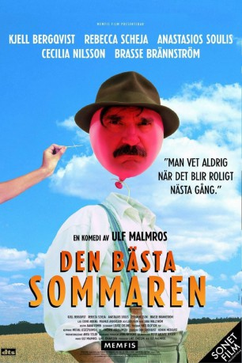

#11456 Liebe in Blechdosen
Alternativ: Ein toller Sommer
 
 IMDB-Wertung: 7.3 / 10
IMDB-Wertung: 7.3 / 10  Metascore: 0
Metascore: 0 
Die beiden Waisenkinder Mårten und Annika fahren im Jahre 1958 in den Sommerferien zum Bestattungsunternehmer Yngve Johansson, bei dem alles nach festen Zeiten gehen muss. Als erstes legen die Kinder daher seine große Standuhr lahm, denn schließlich sind Ferien. Und auch sonst bringen sie so einiges in seinem Leben durcheinander. Mårten und Annika werden von den engstirnigen Dorfbewohnern sehr kritisch betrachtet. Dadurch kommen sich die Beiden untereinander umso schneller näher. Die Kinder merken, dass Yngve Johansson im Grunde ein lieber und schüchterner Mensch ist, dem es ähnlich wie ihnen ergeht, daher wollen sie ihm helfen, und schaffen es schließlich, dass er mit der Lehrerin Frau Svanström zusammenkommt. Und auch die zarte Beziehung zwischen Mårten und Annika wird immer tiefer.
Jahr: 2000
Dauer: 87 Minuten
FSK:
Land: Schweden Studio: Sonet FilmTonspuren:
Untertitel:
Auflösung: 720p (1280x720) Größe: 1843 MB
Genre: Drama, Komödie, Familie, Liebe
Regisseur: Ulf Malmros
Drehbuch: Ulf Malmros, Vasa
Soundtrack: Henrik Medquist, Dan Sundquist
Darsteller:
 Kjell Bergqvist als Yngve Johansson
Kjell Bergqvist als Yngve Johansson- Anastasios Soulis als Mårten
- Brasse Brännström als Sven
- Ann Petrén als Ljungström
 Ralph Carlsson als Priest
Ralph Carlsson als Priest Jerker Fahlström als Messenger
Jerker Fahlström als Messenger- Rebecca Scheja als Annika
- Cecilia Nilsson als Miss Svanström
- Marcus Hasselborg als Harald
- Gachugo Makini als Jacques
- Göran Thorell als Erik Olsson
- Pale Olofsson als Head Waiter
- Anna Kristina Kallin als Nurse
- Johan Holmberg als Policeman
Datei: X:\2000\Liebe in Blechdosen (2000, FSK, 1280x720).mkv seit 09.07.2019
Festplatte: Gemischt-01+Anime
 Es gibt insgesamt 82 Filme in der Gruppe '2000'
Es gibt insgesamt 82 Filme in der Gruppe '2000'